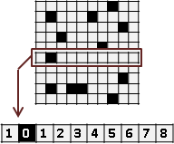
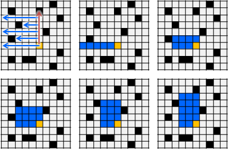
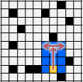
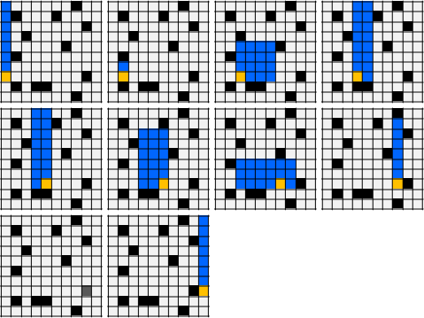

Largest Empty Rectangle
Largest Empty Rectangle
一張方格紙，許多格子填入黑色。請找出不包含黑格子的矩形，令矩形面積盡量大。
矩形的頂點，是一整個格子，而不是直線與橫線的交叉點。
UVa 10074 10502 10667
直覺的演算法：窮舉法
矩形總共四個頂點，窮舉所有可能的頂點位置。紙的長寬為H和W的話，總共H*W個位置可以放上頂點。窮舉所有矩形，時間複雜度是O((H*W)^4)。另外還得確認矩形不含黑格子，就是O((H*W)^5)。
想要確定一個矩形的大小和位置，其實只要兩個對角頂點就夠了；窮舉所有矩形，時間複雜度是O((H*W)^2)。確認矩形不含黑格子，就是O((H*W)^3)。
想要確定一個矩形的大小和位置，也可以利用左上角的頂點、長、寬；窮舉所有矩形，時間複雜度是O((H*W)^2)。確認矩形不含黑格子，就是O((H*W)^3)。
預先計算二維前綴和，就能迅速計算二維區間和，時間複雜度是O(H*W)。窮舉所有矩形，同時確認矩形不含黑格子：判斷矩形面積與區間和是否相等，就是O((H*W)^2)。
簡單的演算法
接著試試Dynamic Programming吧！
原來的紙張又大又複雜，計算面積非常麻煩。我們試著將紙張切成小塊，逐一處理。這裡將紙張切成橫條。
窮舉紙張上的每個位置（窮舉矩形右下角頂點），觀察以上每個橫條（窮舉矩形高度），往左可延伸的長度（預先用Largest Empty Interval得到矩形寬度），持續記錄最大矩形面積。
時間複雜度分析：一、每個橫條計算Largest Empty Interval。二、窮舉矩形右下角頂點，窮舉矩形高度，計算矩形面積。時間複雜度是O((H*W)*H)。
空間複雜度分析：儲存全部問題的答案，空間複雜度是O(H*W)。只想計算一個特定問題的答案，空間複雜度仍是O(H*W)。
可以改為切直條。可以改為窮舉矩形右上角頂點。道理都一樣。
程式碼
為了不超出邊界、導致溢位，於是在紙張外面多圍一圈。這是實作二維地圖的常見手法。
然後是一個橫條的Largest Empty Interval。
補足程式碼，計算所有橫條。
計算Largest Empty Rectangle。
更好的演算法
窮舉紙張每一個位置（下邊界），先往上延伸到底（上邊界），再往左右延伸到底（左右邊界），計算面積。
紙張依舊切成橫條。建立由上到下（上邊界）、由左到右（左邊界）、由右到左（右邊界），一共三種Largest Empty Interval，以此為基礎來計算面積。
時間複雜度是O(H*W)。
最好的演算法
利用一個stack，宛如判斷括號對稱，找出矩形的左右邊界。
時間複雜度是O(H*W)。
0-1.
以此為例。
0000000000000000
0000011111000001
0011111111100001
0111111111110001
1111111111110011
1111111111111111
0000000000000000
0-2.
計算每個直條的Largest Empty Interval。
0000000000000000
0000011111000001
0011122222100002
0122233333210003
1233344444320014
2344455555431125
0000000000000000
0-3.
引入堆疊。堆疊「從下到上」必須是遞增的。
為了方便起見，從倒數第二個橫條開始執行。
0000000000000000
0000011111000001 | |
0011122222100002 | |
0122233333210003 | |
1233344444320014 | |
-> 2344455555431125 | |
0000000000000000 +-------------+
1.
首先遇到「高度2」。「高度2」放入堆疊。
0000000000000000
0000011111000001 | |
0011122222100002 | |
0122233333210003 | |
^233344444320014 | |
^344455555431125 | 高度2 位置1 |
0000000000000000 +-------------+
2.
遇到「高度3」。「高度3」>「高度2」，「高度3」放入堆疊。
0000000000000000
0000011111000001 | |
0011122222100002 | |
0^22233333210003 | |
1^33344444320014 | 高度3 位置2 |
2^44455555431125 | 高度2 位置1 |
0000000000000000 +-------------+
3.
0000000000000000
0000011111000001 | |
00^1122222100002 | |
01^2233333210003 | 高度4 位置3 |
12^3344444320014 | 高度3 位置2 |
23^4455555431125 | 高度2 位置1 |
0000000000000000 +-------------+
4.
0000000000000000
0000011111000001 | |
001^122222100002 | |
012^233333210003 | 高度4 位置3 |
123^344444320014 | 高度3 位置2 |
234^455555431125 | 高度2 位置1 |
0000000000000000 +-------------+
5.
0000000000000000
0000011111000001 | |
0011^22222100002 | |
0122^33333210003 | 高度4 位置3 |
1233^44444320014 | 高度3 位置2 |
2344^55555431125 | 高度2 位置1 |
0000000000000000 +-------------+
6.
0000000000000000
00000^1111000001 | |
00111^2222100002 | 高度5 位置6 |
01222^3333210003 | 高度4 位置3 |
12333^4444320014 | 高度3 位置2 |
23444^5555431125 | 高度2 位置1 |
0000000000000000 +-------------+
7.
0000000000000000
000001^111000001 | |
001112^222100002 | 高度5 位置6 |
012223^333210003 | 高度4 位置3 |
123334^444320014 | 高度3 位置2 |
234445^555431125 | 高度2 位置1 |
0000000000000000 +-------------+
8.
0000000000000000
0000011^11000001 | |
0011122^22100002 | 高度5 位置6 |
0122233^33210003 | 高度4 位置3 |
1233344^44320014 | 高度3 位置2 |
2344455^55431125 | 高度2 位置1 |
0000000000000000 +-------------+
9.
0000000000000000
00000111^1000001 | |
00111222^2100002 | 高度5 位置6 |
01222333^3210003 | 高度4 位置3 |
12333444^4320014 | 高度3 位置2 |
23444555^5431125 | 高度2 位置1 |
0000000000000000 +-------------+
10.
0000000000000000
000001111^000001 | |
001112222^100002 | 高度5 位置6 |
012223333^210003 | 高度4 位置3 |
123334444^320014 | 高度3 位置2 |
234445555^431125 | 高度2 位置1 |
0000000000000000 +-------------+
11.
遇到「高度4」。比堆疊頂端的「高度5」還小。
換句話說，高度5的矩形，已經到了盡頭、到了右邊界。
彈出「高度5」，計算面積吧！
面積 = 高度5 * (位置11 - 位置6) = 25
0000000000000000 高度5 位置6
00000#####000001 | |
00111#####^00002 | |
01222#####^10003 | 高度4 位置3 |
12333#####^20014 | 高度3 位置2 |
23444#####^31125 | 高度2 位置1 |
0000000000000000 +-------------+
12.
遇到「高度3」。比堆疊頂端還小！彈出！
面積 = 高度4 * (位置12 - 位置3) = 36
0000000000000000 高度4 位置3
0000011111000001 | |
00#########00002 | |
01#########^0003 | |
12#########^0014 | 高度3 位置2 |
23#########^1125 | 高度2 位置1 |
0000000000000000 +-------------+
13-1.
面積 = 高度3 * (位置13 - 位置2) = 33
0000000000000000 高度3 位置2
0000011111000001 | |
0011122222100002 | |
0###########0003 | |
1###########0014 | |
2###########^125 | 高度2 位置1 |
0000000000000000 +-------------+
13-2.
面積 = 高度2 * (位置13 - 位置1) = 24
0000000000000000 高度2 位置1
0000011111000001 | |
0011122222100002 | |
0122233333210003 | |
############0014 | |
############^125 | |
0000000000000000 +-------------+
13-3.
「高度1」放入堆疊。可以想成：「高度1」比目前堆疊頂端還大。
注意到，「位置1」沿用上一個彈出的位置。
0000000000000000
0000011111000001 | |
0011122222100002 | |
0122233333210003 | |
1233344444320014 | |
234445555543^125 | 高度1 位置1 |
0000000000000000 +-------------+
14.
0000000000000000
0000011111000001 | |
0011122222100002 | |
0122233333210003 | |
1233344444320014 | |
2344455555431^25 | 高度1 位置1 |
0000000000000000 +-------------+
15.
0000000000000000
0000011111000001 | |
0011122222100002 | |
0122233333210003 | |
12333444443200^4 | 高度2 位置15|
23444555554311^5 | 高度1 位置1 |
0000000000000000 +-------------+
16.
0000000000000000
000001111100000^ | |
001112222210000^ | |
012223333321000^ | 高度5 位置16|
123334444432001^ | 高度2 位置15|
234445555543112^ | 高度1 位置1 |
0000000000000000 +-------------+
17-1.
最後記得處理堆疊剩下的元素。
面積 = 高度5 * (位置17 - 位置16) = 5
0000000000000000 高度5 位置16
000001111100000# | |
001112222210000# | |
012223333321000# | |
123334444432001# | 高度2 位置15|
134445555543112# | 高度1 位置1 |
0000000000000000 +-------------+
17-2.
面積 = 高度2 * (位置17 - 位置15) = 4
0000000000000000 高度2 位置15
0000011111000001 | |
0011122222100002 | |
0122233333210003 | |
12333444443200## | |
13444555554311## | 高度1 位置1 |
0000000000000000 +-------------+
17-3.
面積 = 高度1 * (位置17 - 位置1) = 16
0000000000000000 高度1 位置1
0000011111000001 | |
0011122222100002 | |
0122233333210003 | |
1233344444320014 | |
################ | |
0000000000000000 +-------------+